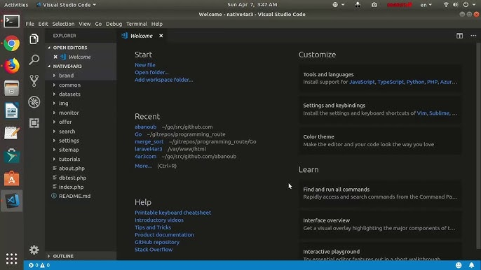
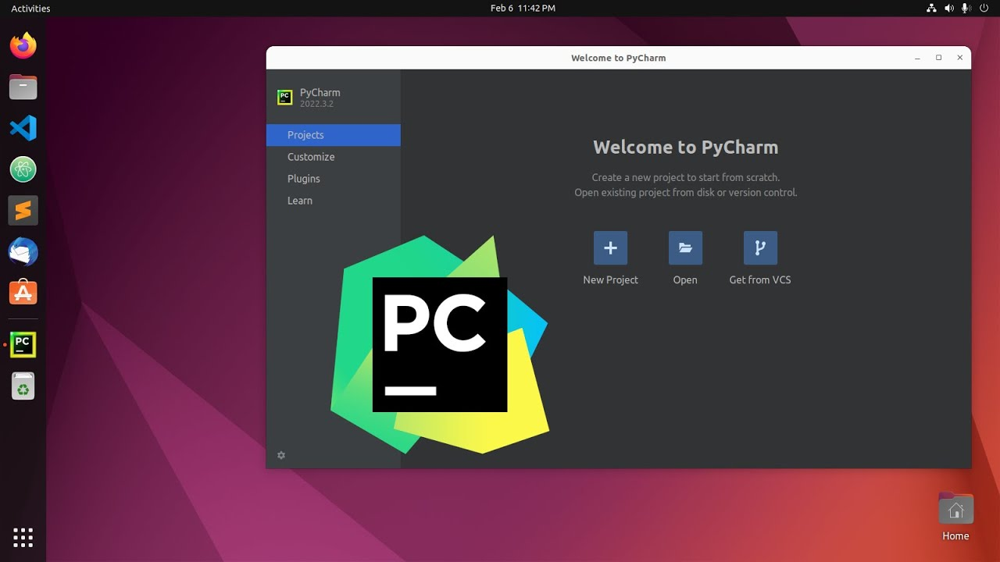
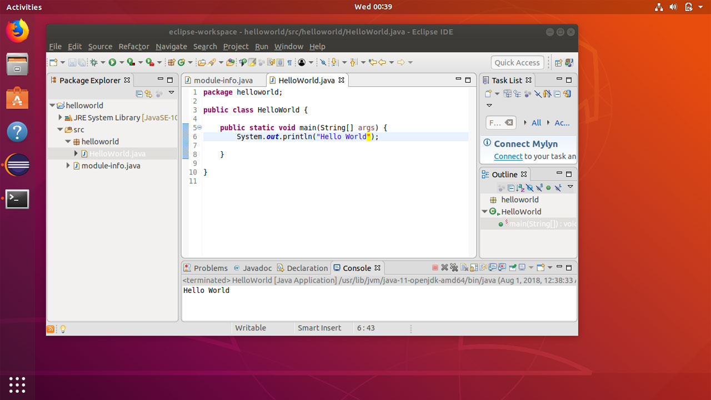
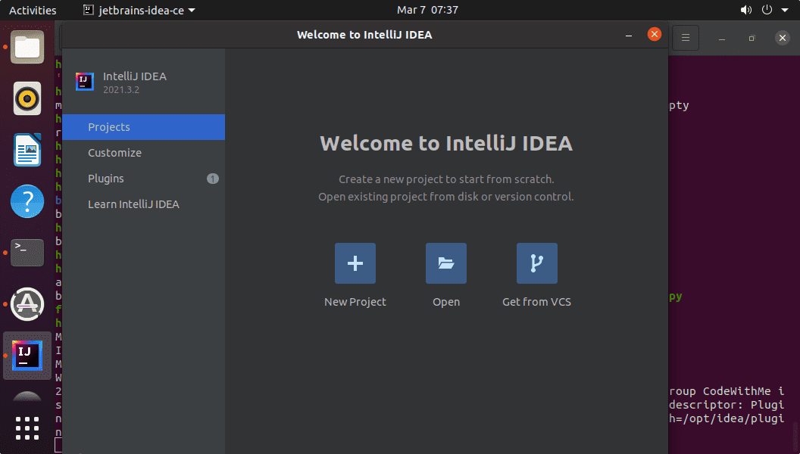

Visual Studio Code
Editor de código poderoso e extensível. Ideal para várias linguagens como Python, JavaScript, PHP e mais. Disponível via Snap ou .deb.
PyCharm
IDE dedicada ao Python, perfeita para desenvolvimento backend e data science.
Eclipse
IDE robusta para desenvolvimento Java e outras linguagens.
IntelliJ IDEA
IDE altamente eficiente para desenvolvimento Java, Kotlin e outros.
